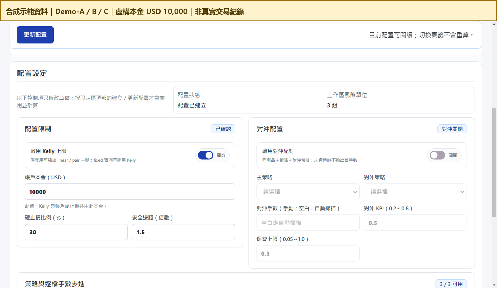
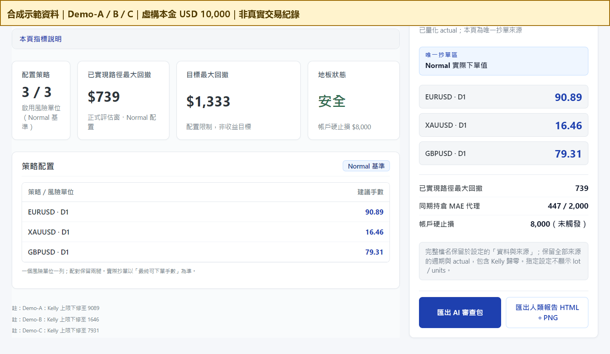
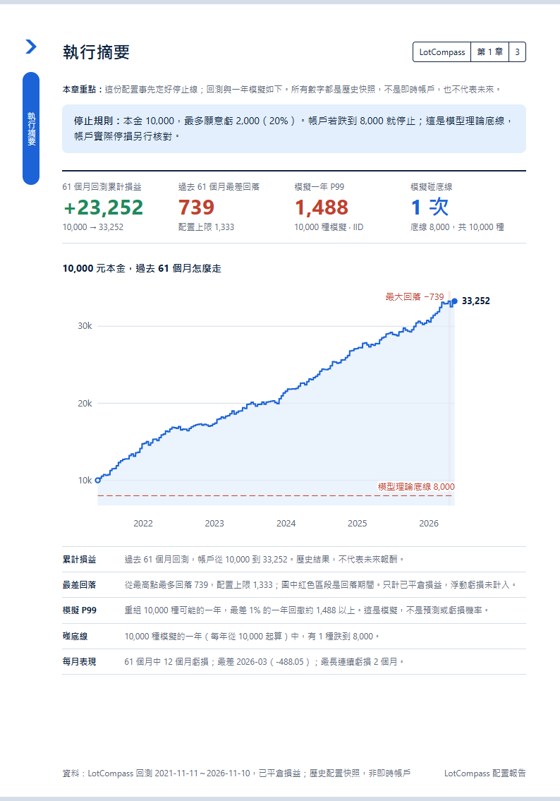

LotCompass ／ 交易風險管理
調整手數前，先看歷史回撤與模擬風險。
把 TradingView 匯出的策略交易紀錄，算成每個策略的建議手數，並附上歷史回撤與模擬風險估計，讓我判斷能不能接受。
我想解決的問題
我做外匯 CFD 交易，手上同時有好幾個策略。最難的一步，是決定每個策略該下多少手：如果憑感覺配置，很容易讓某個策略下得太重，或讓整個帳戶承受不了一段連續虧損。所以我做了 LotCompass：先依各策略的歷史回撤、帳戶可接受的最大虧損與 Kelly 上限，算出建議手數；再用模擬呈現可能的回撤範圍，供我判斷是否採用。
我之前做過一版類似的工具，但它承諾太多，例如要守住帳戶 20% 的停損線，重新檢查後才發現計算撐不起這個承諾，也陸續找到嚴重錯誤。繼續在上面修補只會越來越亂，所以我重新做了 LotCompass。
做出的功能
- 讀取 TradingView 匯出的 Excel；手數、時間等資料對不起來就具名拒絕，不用猜的。
- 所有策略都用同一段正式評估區間計算，避免不同模組各用不同期間。
- 每個策略的手數附上原因，例如受 Kelly 上限限制、依步進向下取整。
- 列出歷史最大回撤與配置上限、模擬一年的回撤分位數，以及同期持倉的 MAE 代理估計（不是實際帳戶浮虧）。
- 暫停部分策略之前，必須逐項人工確認，工具不會自己判斷可以暫停。
- 匯出兩種報告：給 AI 讀的 JSON，和給人看的 HTML；兩者來自同一次計算。
刻意不做的事
不承諾盤中保證、不自動下單、不連券商。風險數字是根據歷史與模擬的估計，不是未來虧損的上限。工具只負責算和呈現，下單與是否採用由我決定。
和 AI 流程接起來
匯出的 AI JSON 交給一個 Skill，產出每次週期檢視的報告，讓週期開始與結束時的檢查有固定格式。
這次展示的選擇
右側是 LotCompass 實際產生的報告，但資料全部是合成的：用程式隨機產生三個示範策略（Demo-A、B、C）的交易紀錄，本金設為虛構的 10,000 美元。報告裡的手數、權益曲線與績效都是合成結果，不是我的交易績效，也不是投資建議。



我負責定義要回答的問題與不做的範圍、風險規則與門檻，以及每次配置時的實際判斷。
AI Agent 協助計算核心與桌面介面程式、測試與驗證、文件整理。
目前界線：工具只有我自己用，為 Windows 桌面程式（Electron＋Python）。報告格式為 D 版（LotCompass 2.2.0）；手數與風險數字是歷史回撤與模擬風險估計，不是未來虧損的上限。